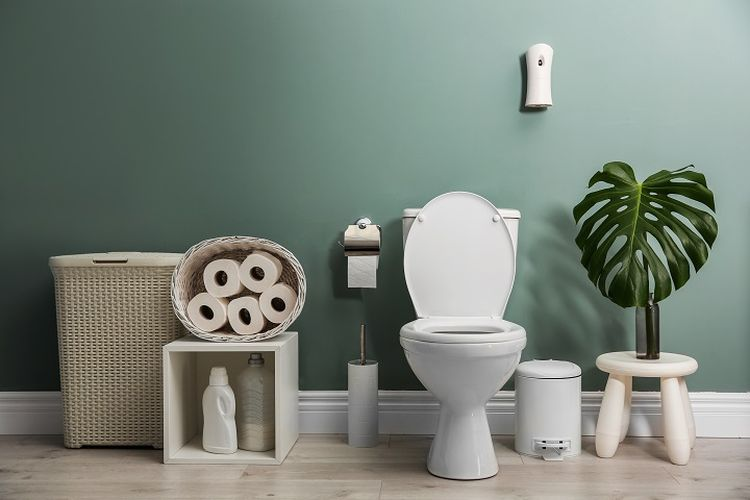

Mana Lebih Sehat, Toilet Jongkok atau Duduk?
Toilet jongkok dan toilet duduk adalah 2 jenis kloset yang umum digunakan. Jenis kloset yang digunakan tidak hanya memengaruhi posisi buang air besar (BAB) penggunanya, tetapi juga kesehatan serta kelancaran BAB kita, lho.

Kelebihan dan Kekurangan Toilet Duduk
Toilet duduk memiliki model dan desain yang lebih modern dan mewah. Toilet jenis ini juga dianggap lebih nyaman digunakan bagi beberapa kalangan, seperti lansia, wanita yang hamil besar, atau penderita cedera lutut.
Namun, harga toilet duduk memang cenderung lebih mahal dan penggunaanya untuk BAB dinilai tidak lebih sehat dibandingkan kloset tradisional atau toilet jongkok.
Berdasarkan penelitian, BAB menggunakan toilet duduk membutuhkan waktu yang lebih lama dan tenaga yang lebih besar daripada toilet jongkok. Padahal, terlalu keras mengejan saat BAB dan duduk terlalu lama di toilet duduk dapat meningkatkan risiko sejumlah penyakit, seperti wasir dan sembelit.
Selain itu, penggunaan toilet duduk bisa meningkatkan risiko seseorang terjangkit penyakit diare, flu, hingga infeksi kulit. Soalnya, kulit akan bersentuhan langsung dengan permukaan dudukan kloset yang rentan menjadi sarang bakteri E.coli dan Shigella atau virus hepatitis A dan norovirus.
Kelebihan dan Kekurangan Toilet Duduk
Dibandingkan dengan toilet duduk, toilet jongkok memang memiliki sejumlah kekurangan, seperti:
- Modelnya kuno
- Dianggap kurang nyaman digunakan karena dapat menyebabkan keluhan nyeri pada tumit dan paha
- Tidak cocok digunakan oleh orang yang mengalami gangguan pada pergelangan kaki, misalnya penderita radang sendi, keseleo, patah tulang, hingga tendinitis
Namun, dibalik kekurangannya, BAB menggunakan toilet jongkok memiliki banyak kelebihan dari segi kesehatan. Sejumlah penelitian menyebut, posisi jongkok saat BAB lebih efektif melancarkan proses BAB. Ini berkaitan erat dengan kinerja otot dan postur tubuh yang mendukung proses BAB.
Posisi jongkok berfungsi mengoptimalkan ruang pembuangan tinja di anus sekaligus membuat otot di anus dan usus besar lebih relaks. Dengan begitu, BAB pun menjadi lebih mudah dan tinja bisa keluar lebih maksimal. Sedangkan, pada posisi duduk, otot saluran cerna akan menekan rektum serta menyempitkan saluran dubur. Hal ini bisa mengganggu kelancaran BAB.
Penelitian lain menyebutkan, BAB menggunakan toilet jongkok atau dengan posisi jongkok dapat membantu menjaga pergerakan usus, sehingga mencegah kembung, sembelit, dan wasir. Selain itu, toilet jongkok juga baik digunakan untuk ibu hamil karena dapat menjaga kekuatan otot panggul.
Pilih Toilet Jongkok atau Toilet Duduk?
Berdasarkan fakta-fakta di atas, penggunaan toilet jongkok untuk BAB lebih disarankan daripada toilet duduk. Namun, kalau kamu lebih nyaman pakai toilet duduk dan sudah memasangnya di rumah, tidak perlu dibongkar lagi.
Melihat kelebihan dan keuntungan masing-masing jenis toilet, sekarang kamu bisa memilih sesuai dengan kondisimu. Terlepas dari penggunaan kedua jenis toilet tersebut, jika kamu mengalami susah buang air besar atau tampak ada darah di feses, segera periksakan diri ke dokter untuk mendapatkan penanganan.
INSPIRASI KESEHATAN
-

Viral Kos Wanita Penuh Sampah, Apa Penyebab Hoarding Disorder?
Hoarding disorder biasanya ditunjukan dengan kesulitan membuang barang dan lebih senang menimbunnya hingga menumpuk berantakan. Mengutip Mayo Clinic, orang yang mengidap gangguan ini biasanya merasa tertekan saat harus membuang barang atau sampah tertentu.
-

Apakah Kacang Menyebabkan Jerawat? Ini Penjelasannya
Jerawat sering kali menjadi masalah kulit yang mengganggu, dan banyak faktor yang dapat memengaruhi timbulnya jerawat. Salah satu mitos yang sering muncul adalah apakah kacang menyebabkan jerawat
-
Urutan Pemakaian Skincare Pagi dan Malam yang Wajib Diketahui
“Urutan skincare pada pagi hari dan malam hari kurang lebih sama, hanya saja terdapat sedikit perbedaan. Moisturizer menjadi salah satu tahap yang penting dalam skincare.”
-

Putin Samakan Israel dengan Nazi
Menyamakan tindakan Israel yang secara paksa ingin memblokade Jalur Gaza Palestina seperti blokade Nazi terhadap Leningrad.
-

Kisah Kematian Tragis Mahapatih Majapahit
Mahapatih Majapahit Mpu Nambi tak bisa membayangkan kepulanganya karena ayahnya sakit bakal menjadi...
-

Waspada!! 16 Kali Muntahan Lava Pijar Gunung Merapi
12 jam terakhir terjadi 16 kali guguran lava pijar dari puncak Gunung Merapi dengan arah dan jarak luncur berbeda